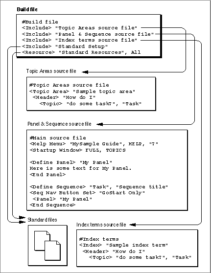

Preparing Your Source Files
If your help content contains more than one panel sequence, you have most likely described it in multiple source files. For example, you might have a couple of source files that describe the panels and sequences, and a resource file that contains pictures for your panels. If you have divided your help content into multiple files, you need to merge the content together when you build your guide file.To combine the help content together you need to create a file--called a build file--that merges together all of your source files. A build file is a source file that contains only <Include> and <Resource> commands. You use the <Include> command to specify your source files and the <Resource> command to specify a file containing resources for your guide file. (For more information on these commands, see the chapter "Guide Script Command Reference" in Part 4 of this book.)
- Note
- If your help content is in only one source file, you do not need to read this section. Instead, you can proceed to the next section; it describes how to build your guide file.
For example, if you split your help content into two source files, you need to create a build file that specifies both of these files. Figure 5-1 illustrates a working example of a build file and its accompanying source files. This build file specifies five source files that describe
The two standard files, Standard Setup and Standard Resources, are provided with Guide Maker. The Standard Setup file contains the Guide Script commands that give basic information about a guide file, such as prompt set definitions, navigation bar button definitions, and format definitions for placing objects and text in your panels. The Standard Resources file contains the
- the topic areas and topics of the guide file
- the panels and sequences for the guide file
- the index terms of the guide file
- the basic setup information for the guide file (the Standard Setup file)
- the resources used by the guide file (the Standard Resources file)
'PICT'resources that describe the GoStart and Huh? buttons, and a sample application logo. The file also contains external modules for context checks. If you include the Standard Setup and Standard Resources files in your build file, you can automatically use these definitions and graphics in your guide file. For more information on these two files, see Appendix C.The next section describes how to build your guide file.
- Note
- When you build your guide file, you must place any files referenced by <Include> or <Resource> commands in the same folder as your build file. If the files (or an alias to each of the files) are not in the same folder, you will not be able to build your guide file.

Figure 5-1 Creating a build file
